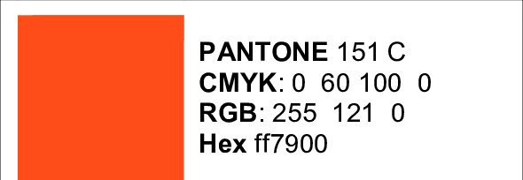

SMS in general SMS products & services SMS: How, why and when? Articles on colour
 Mr. Michael Abildgaard Pedersen |
Why most Brand Manuals fail when it
comes to defining Brand colours; How to determine acceptable colour deviations for specific Brand colours
|

A typical brand colour description based on the research of Mr. Michael Abildgaard Pedersen.
Abstract and figures
From top class Universities and governmental
organizations to high-end global brands and
well-known local brands, a surprising
consistency of inattentiveness has been
published in these companies’ prestigious Brand
Manuals and Brand Guides.
When it comes to providing technical guidance, defining and describing their Brand colours, they all fail.
By examining and analyzing more than 300 different Brand colours from 156 Brand Manuals by reputable local and Global Brands including 28 of the 100 Best Global Brands (Interbrand 2015) (see Appendix) and by numerous of visits and interviews with responsible professionals from both sides throughout the years it is obvious that there is an alarming lack of communication between technical experts and design experts.
91 % of the Brand Manuals specifies their Brand colours as either PANTONE or PANTONE C. 90.4 % of the Brand Manuals also specifies their Brand colours with supplementary CMYK-values even though only 45.8 % of those Brand colours are achievable by using the process colours CMYK. This will result in unpredicted colour differences of up to 35 ΔEab or 8.3 ΔE2000 when some of those Brand colours are reproduced. Nevertheless, none of the Brand Manuals has neither any remarks, comments or warnings of colour deviations nor indications of acceptable colour tolerances. Only 1.3 % of the Brand Manuals also define their Brand colours with device independent CIELAB-values.
It appears that when designers and Brand Owners select and specify Brand colours they tend to choose colours which cannot be reproduced by using CMYK process colours and therefore the Brand colour cannot be shown in e.g. magazine ads, newspaper ads, digital print and other print media. They are bound to be disappointed. This Paper will present a practical approach to specifying and communication Brand colours and to determine acceptable colour deviation for specific Brand colours.
To read the whole paper please subscribe to www.researchgate.net (free of charge) and follow the link here below:
Brand colour specification in Brand manuals and determination of acceptable colour differences
When it comes to providing technical guidance, defining and describing their Brand colours, they all fail.
By examining and analyzing more than 300 different Brand colours from 156 Brand Manuals by reputable local and Global Brands including 28 of the 100 Best Global Brands (Interbrand 2015) (see Appendix) and by numerous of visits and interviews with responsible professionals from both sides throughout the years it is obvious that there is an alarming lack of communication between technical experts and design experts.
91 % of the Brand Manuals specifies their Brand colours as either PANTONE or PANTONE C. 90.4 % of the Brand Manuals also specifies their Brand colours with supplementary CMYK-values even though only 45.8 % of those Brand colours are achievable by using the process colours CMYK. This will result in unpredicted colour differences of up to 35 ΔEab or 8.3 ΔE2000 when some of those Brand colours are reproduced. Nevertheless, none of the Brand Manuals has neither any remarks, comments or warnings of colour deviations nor indications of acceptable colour tolerances. Only 1.3 % of the Brand Manuals also define their Brand colours with device independent CIELAB-values.
It appears that when designers and Brand Owners select and specify Brand colours they tend to choose colours which cannot be reproduced by using CMYK process colours and therefore the Brand colour cannot be shown in e.g. magazine ads, newspaper ads, digital print and other print media. They are bound to be disappointed. This Paper will present a practical approach to specifying and communication Brand colours and to determine acceptable colour deviation for specific Brand colours.
To read the whole paper please subscribe to www.researchgate.net (free of charge) and follow the link here below:
Brand colour specification in Brand manuals and determination of acceptable colour differences